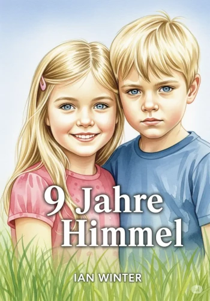
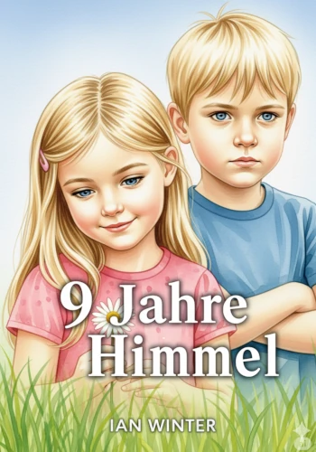
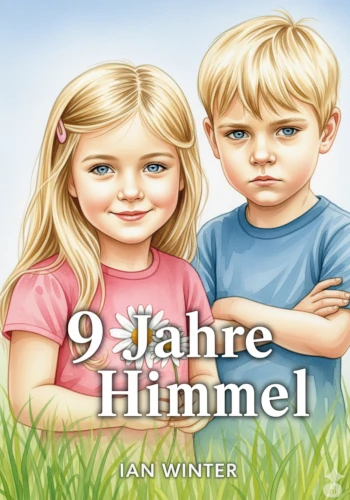
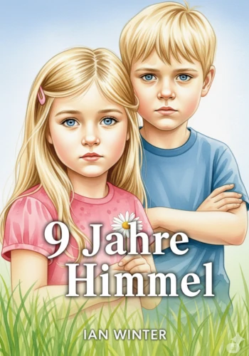
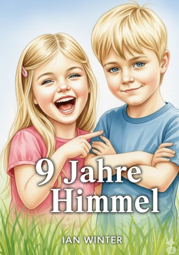
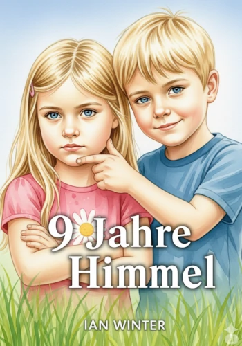

9 Jahre Himmel
Basierend auf den Tagebüchern von Ian Winter
Als Ian Sarah zum ersten Mal begegnet, verändert sich etwas in ihm. Sie sieht ihn an und plötzlich ist die Welt nicht mehr dieselbe. Sarah ist klug, direkt und voller Energie – und zum ersten Mal in seinem Leben fühlt sich Ian nicht allein.
Mit ihr entdeckt er eine Welt, in der Berührungen nicht kalt, sondern warm sind, in der Stille nicht Einsamkeit, sondern Geborgenheit bedeutet. Sie bringt ihm das Spielen bei, das Tanzen, das Lesen – er zeigt ihr, was es heißt, wirklich gesehen zu werden. Ihre Liebe wächst, noch bevor sie das Wort dafür finden, getragen von gemeinsamen Träumen, Versprechen und einem tiefen Vertrauen, das niemand ihnen beigebracht hat.
Doch mit jeder Umarmung, jedem Kuss und jeder gemeinsamen Nacht stellt sich eine unausweichliche Frage: Dürfen Kinder eine Liebe leben, die so tief geht? Die Erwachsenen beobachten sie, manche mit Wohlwollen, andere mit Sorge, manche mit offenem Widerstand. Können Sarah und Ian gegen eine Welt bestehen, die ihnen nicht zutraut, zu fühlen, was sie längst wissen?
Eine Geschichte über eine Liebe, die nach keiner Erlaubnis fragt – weil sie einfach ist. Eine Geschichte, die beweist, dass Märchen nicht geschenkt – sondern erkämpft werden.






Die Hauptcharaktere
Sarah Winter
Sarah Winter ist ein außergewöhnlich willensstarkes, emotional intelligentes und selbstbewusstes Mädchen. Sie agiert als die treibende Kraft in der Beziehung zu Ian, gibt ihm den emotionalen Halt, den er braucht, und verteidigt ihre gemeinsame Welt mit einer Entschlossenheit, die weit über ihr Alter hinausgeht.
Persönlichkeit und Entwicklung
Vom ersten Moment an ist Sarah diejenige, die die Initiative ergreift. Sie nimmt Ians Hand, führt ihn durch ihr Haus und stellt klare Bedingungen für ihre Freundschaft. Sie ist äußerst direkt und scheut sich nicht, ihre Wünsche und Gefühle klar zu äußern, sei es der Wunsch nach einem Sitzplatz neben Ian oder ihr Entschluss, ihn zu heiraten. Ihre Entwicklung zeigt sich darin, wie sie von einer reinen "Lehrerin" für Ian zu seiner gleichberechtigten Partnerin wird, die seine Stärken erkennt, fördert und sich gleichzeitig von ihm helfen lässt.
Stärken und Weltbild
Sarahs größte Stärke ist ihre emotionale Reife und Empathie. Sie erkennt Ians Unsicherheiten sofort und weiß instinktiv, wie sie ihm begegnen muss. Sie ist eine geduldige Lehrerin, die Ian mit viel Einfühlungsvermögen das Spielen und Lesen näherbringt. Sie ist furchtlos und verteidigt ihre Beziehung und Ian vehement gegenüber allen, die Zweifel äußern, einschließlich der Erwachsenen. Ihre Welt dreht sich um die Menschen, die sie liebt, und sie ist bereit, für deren Glück zu kämpfen.
Herausforderungen und Ängste
Ihre größte Angst ist die Trennung von Ian und die Vorstellung, ihn zu verlieren. Diese Angst kann sich in besitzergreifenden Aussagen ("Ab Heute gehörst du mir!") oder Eifersucht äußern. Sie leidet sichtlich unter den wöchentlichen Abschieden und kämpft mit aller Macht für eine gemeinsame Zukunft ohne diese Trennungen.
Die Beziehung zu Ian
Für Sarah ist Ian ihr "Blödi" und ihr "Lieblingsmensch". Ihre Liebe ist von Anfang an bedingungslos. Sie ist die Erste, die "Ich liebe dich" sagt und einen Kuss initiiert. Sie sieht in seiner Andersartigkeit keine Schwäche, sondern etwas Einzigartiges und Liebenswertes ("Du denkst komisch! Ich mag das!"). Ihre Beziehung ist für sie kein kindliches Spiel, sondern ein ernsthaftes Versprechen. Der gemeinsame Tanz zu Elton Johns "Your Song" besiegelt für sie symbolisch ihre "Hochzeit". Sie ist die schützende Kraft, die Ian den Freiraum gibt, er selbst zu sein.
Ian Wagner
Ian Wagner ist ein hochintelligenter und zutiefst logisch veranlagter Junge, der die Welt in Mustern und Systemen begreift, sich aber in den Unwägbarkeiten menschlicher Interaktionen verloren fühlt. Seine Reise in dem Manuskript ist die einer tiefgreifenden emotionalen Öffnung, die fast ausschließlich durch seine Begegnung mit Sarah ermöglicht wird.
Persönlichkeit und Entwicklung
Zu Beginn der Geschichte ist Ian ein introvertierter Einzelgänger. Er spricht mit sich selbst, empfindet die Berührungen der meisten Menschen als kalt und unangenehm und findet keinen Zugang zum kindlichen Spiel. Seine Welt ist geordnet und rational. Die Begegnung mit Sarah ist für ihn eine Offenbarung; er bezeichnet sie vom ersten Moment an als "Engel". Ihre Berührung ist die erste, die sich für ihn "warm und vertraut" anfühlt. Durch ihre Geduld lernt er zu spielen, seine Leseschwäche zu überwinden und beginnt, soziale Interaktionen nicht nur zu ertragen, sondern aktiv zu genießen. Seine Entwicklung gipfelt darin, dass er nicht nur Liebe empfangen, sondern sie auch ausdrücken kann, sowohl gegenüber Sarah als auch gegenüber seinem Vater.
Stärken und Weltbild
Ians größte Stärke ist sein analytischer Verstand. Er versteht mühelos komplexe Zusammenhänge in Mathematik, Musik und sogar Physik. Er hat die Fähigkeit, komplizierte Sachverhalte auf einfache, logische Prinzipien herunterzubrechen. Dieses Talent nutzt er, um Sarah bei den Hausaufgaben zu helfen. Musik ist für ihn ein Schlüssel zum Verständnis von Emotionen und Menschen. Mit der Zeit entwickelt er ein bemerkenswertes Verantwortungsgefühl, nicht nur für seine Beziehung zu Sarah, sondern auch für deren jüngere Schwester Nadine.
Herausforderungen und Ängste
Seine größte Herausforderung ist seine soziale Isolation und sein Unverständnis für die oft unlogische Natur menschlicher Emotionen und Konventionen. Er verabscheut Engstirigkeit und fühlt sich in großen Menschenmengen unwohl. Seine größte Angst ist es, Sarah zu verlieren. Diese Angst ist so fundamental, dass sie ihn zu dem drastischen Entschluss treibt, von zu Hause wegzulaufen, um bei ihr sein zu können.
Die Beziehung zu Sarah
Sarah ist das Zentrum von Ians Universum. Sie ist die Einzige, die seine Mauern durchbrechen kann. Er vertraut ihr bedingungslos und gibt ihr das Versprechen, immer ehrlich zu sein. Für ihn ist ihre Verbindung von Anfang an eine Selbstverständlichkeit, die in seinen Augen eine Heirat rechtfertigt. Er nennt sie liebevoll "mein Engel" und "meine Sonne" und findet durch sie sein "Zuhause".
Eine Liebe, die ihre eigenen Regeln schreibt
Eine Buchbesprechung zum vollständigen Manuskript
Ian Winters Manuskript „9 Jahre Himmel – Die ersten Schritte“ erzählt nicht einfach nur eine Liebesgeschichte. Es ist das Protokoll einer seelischen Symbiose, die sich allen Konventionen von Alter und gesellschaftlicher Norm entzieht. Aus der Perspektive des jungen Ian erleben wir die Entstehung einer Verbindung, die vom ersten Augenblick an so vollständig und unerschütterlich ist, dass sie für Außenstehende erst unheimlich, dann aber zutiefst faszinierend wirkt.
Die Geschichte setzt im September 1986 ein und schildert die schicksalhafte Begegnung zwischen dem in sich gekehrten, streng logisch denkenden Ian und der emotional hochintelligenten, willensstarken Sarah. Ihre Beziehung ist keine, die langsam wächst; sie ist „einfach da“. Vom ersten Händedruck, der Ians autistische Abneigung gegen Berührungen durchbricht, bis zu ihrer bedingungslosen Behauptung als Ehepaar gegenüber der Erwachsenenwelt, agieren die beiden als untrennbare Front.
Der dramatische Wendepunkt – Ians körperlich an die Grenzen gehende Flucht zu Fuß im Winter – markiert dabei nur das Ende des Anfangs. Die wahre Stärke des Romans entfaltet sich in den darauffolgenden Kapiteln: Ian und Sarah fordern nicht nur ihr Recht auf Zusammenleben ein, sie beweisen durch radikale Verantwortungsübernahme, dass ihr geistiges Alter weit über dem biologischen liegt.
Spock trifft auf Emotion: Die perfekte Dynamik
Das Herzstück des Romans ist die fehlerfreie, fast schon literarische Dynamik seiner Protagonisten, die sich perfekt ergänzen.
Ian ist der rationale Anker: Als hochintelligenter, aber sozial distanzierter Junge braucht er die Welt in einem klaren, regelbasierten System. Er seziert Probleme auf ihre nackten Fakten. Das zeigt sich nirgends brillanter als in seiner Reaktion auf eine Teenager-Schwangerschaft, die er pragmatisch auf „füttern, schlafen, kuscheln, windeln“ herunterbricht. Sarah nennt ihn nicht umsonst liebevoll „Spock“. Seine Logik ist sein Schutzschild für die Menschen, die er liebt.
Sarah ist das „Gefühl“: Sie ist die emotionale Koordinatorin und das Herz der Operation. Sie spürt instinktiv, was Ian braucht, übersetzt seine direkte Art für die Außenwelt und nutzt Ians analytische Stärke, um meisterhafte psychologische Strategien zu entwerfen. Sie formt aus Ians Logik Werkzeuge, mit denen die beiden selbst die verbohrtesten Erwachsenen dirigieren.
Die Musik: Die Sprache der Seele
Ein herausragendes Merkmal des Manuskripts ist der Einsatz von Musik. Sie ist weit mehr als nur ein 80er-Jahre-Soundtrack; sie ist Ians primärer Dolmetscher. Da er seine Gefühle anfangs kaum in Worte fassen kann, sprechen die Lieder für ihn. Mit „Who Wants to Live Forever“ von Queen kommuniziert er Sarah an Tag eins sein Innerstes. Musik wird zum Fundament ihrer Verständigung – vom wortlosen Versprechen bei den Dire Straits bis zum ultimativen „nullten Tanz“ als frisch Vermählte zu Elton Johns „Your Song“. Die bekannten Melodien fungieren als emotionale Abkürzungen, die den Leser tief in die Intimität der beiden hineinziehen.
Das "Einhorn" und die neu definierte Familie
Was „9 Jahre Himmel“ im letzten Drittel auszeichnet, ist die meisterhafte Deeskalation von Konflikten durch reine, gelebte Konsequenz. Ian und Sarah sind nicht nur ein Paar, sie übernehmen wie selbstverständlich die Elternrolle für die vierjährige Nadine. Diese Dynamik nutzen sie im grandiosen Finale als psychologische Waffe: Um die Eltern ihrer 16-jährigen Freunde vor dem Schock einer Schwangerschaft abzufangen, präsentieren sich die 8-jährigen Ian und Sarah völlig unironisch als Eltern von Nadine. Die Kochs blicken auf die beiden, „als würden sie ein Einhorn sehen“ – und der eigentliche Konflikt löst sich in Luft auf. Es ist ein taktisches Meisterstück der Kinder, das beweist: Ian und Sarah reagieren nicht auf die Welt, sie formen sie nach ihren eigenen, unerschütterlichen Regeln.
Schlusswort
„9 Jahre Himmel“ ist eine tiefgründige Untersuchung über die Natur von Seelenverwandtschaft, neurodivergenter Wahrnehmung und den Mut, eine Liebe zu leben, die keine Erlaubnis braucht. Das Manuskript lässt den Leser staunend zurück und stellt die fundamentale Frage, ob geistige Reife und wahre Bindung jemals an eine Geburtsurkunde gebunden waren. Für Ian und Sarah ist das Alter nicht nur eine Zahl – es ist eine vollkommene Irrelevanz.
– Eine Buchbesprechung des vollständigen Manuskripts von Kito Mossman